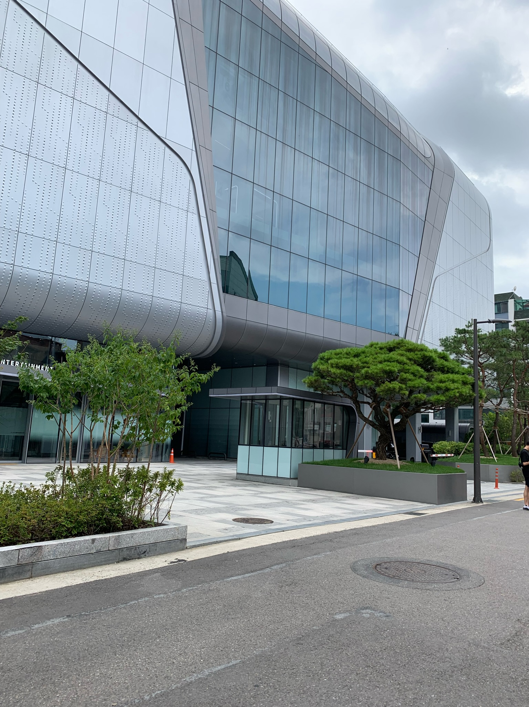

막막함은 끝!
국어
영어
수학
영어
학습부의
학습
상담소
오렌지빛이 나 시원한 바람 거리를 좁혀 난 손을 잡아본다 의미 없는 말들을 던져봐도 넌 긴장 했는지 날 쳐다보지 않아
어두워지기 시작하면 내 표정도 어두워지잖아 네가 돌아서기 전에 오늘은 말해야겠다 싶어
조건 없이 매일 빛나주는 저 노을처럼 너도 항상 그렇게 매일 웃어 주길 바라 Ah ah 그럼 널 평생 간직할 수 있으니까 어두워도 내 눈엔 네가 가장 빛이 나니까 